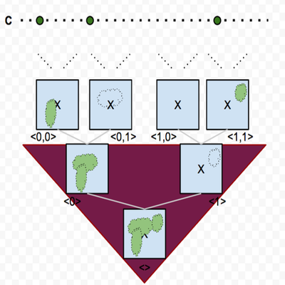

I study set-theoretic topology, particularly topological games and their limited information strategies.

The image above is an illustration of a topological space I’ve studied based upon the Cantor Tree.
What’s a Topological Game?
As a game and puzzle enthusisiast, it’s probably no surprise that I was drawn to game theory in particular when I began studying mathematics. The types of game I like working with are two-player sequential games: each player takes turn making a move, and at the end of the game the result of their moves determines a winning player. (Think Tic-Tac-Toe or chess!)
Dr. Gary Gruenhage took me on as a student while I worked on my master’s degree in topology, studying known properties of LOTS: linearly ordered topological spaces, a generalization of the real numbers. While working with him, I also took a course in descriptive set theory, and when I started learning about the Borel determinacy theorem I was exposed to the world of -length games.
I was hooked! Using games, we can actually characterize the structure of a topological space: for example, a space is Menger if and only if the first player lacks an unbeatable strategy in a game using open covers of the space.
Considering Limited Information
-length means these games last a long time (to say the least). So what if a player had an imperfect memory?
These sorts of considerations turn out to be pretty useful in finding stronger characterizations of topological spaces. A typical example of such a strategy is a Markov strategy: in our context, it means that the player can only recall the number of rounds which have occurred, and the most recent move of her opponent.
In the game I referred to above, the second player has an unbeatable Markov strategy if and only if the space is a countable union of compact spaces. Which adds up: if the second player has a Markov winning strategy, then the first player can’t have a winning strategy. This proves that every space which is the countable union of compact spaces is a Menger space. You could prove it directly, but why would you want to when there are all these fun games you can play instead? :-)
The interested mathematician who wants to learn more is encouraged to check out The Story of a Topological Game which Gary Gruenhage wrote to describe a different game which he designed as a part of his dissertation, and many of its applications found down the road.
What I’ve Done
A good overview of my research can be found in my CV.